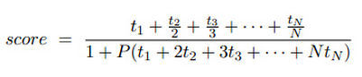

BZPRO
#4089. [Sdoi2015]嫁接树
内存限制：512 MiB
时间限制：10 Sec
提交
提交记录
讨论
题目描述
Alice设计了一个树结构，有 N 个结点（包括根）被依次编号为 1 到 N ，由 N-1 条边连接。后来，Bob在上面增
加了 K 条原来没有的边（也就是说既不是自环，也不会因此产生重边）并称这样得到的图为“K-嫁接树”。现在A
lice希望对嫁接树的每一个结点进行染色，允许使用的颜色恰有 N 种，分别编号为 1 到 N 。Alice要求相邻两个
结点要涂上不同的颜色。假设颜色为 i 的结点有 ti 个，则Bob给出了如下的评价分数：

其中 P 为非负系数。现在，Alice希望可以找到一种染色方案，使得Bob给出来的评分最大。你能帮助他吗？
输入格式
第一行有 2 个整数，依次为 N 和 K，如题所述。
第二行到第 N+K 行，每行有两个整数 u 和 v ，依次给出了 N+K-1 条边。
保证不存在自环，也不存在重边。
最后一行给定非负浮点数 P 。
K≤2；1≤N≤20000；0≤P<10
输出格式
输出最大的可能评分，四舍五入保留到小数点后第三位。
样例
样例输入
9 0
1 2
1 3
1 4
1 5
2 6
2 7
2 8
2 9
2.5
样例输出
0.253
数据范围与提示